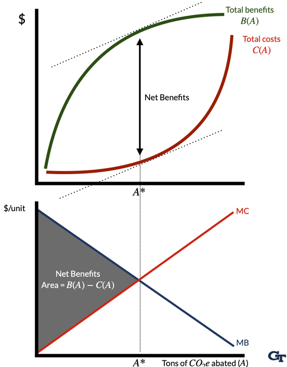
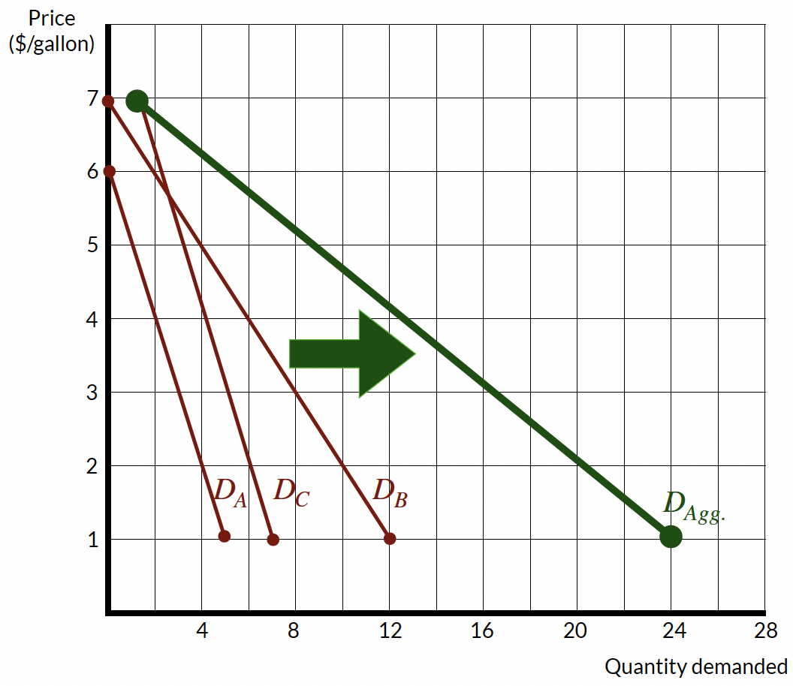
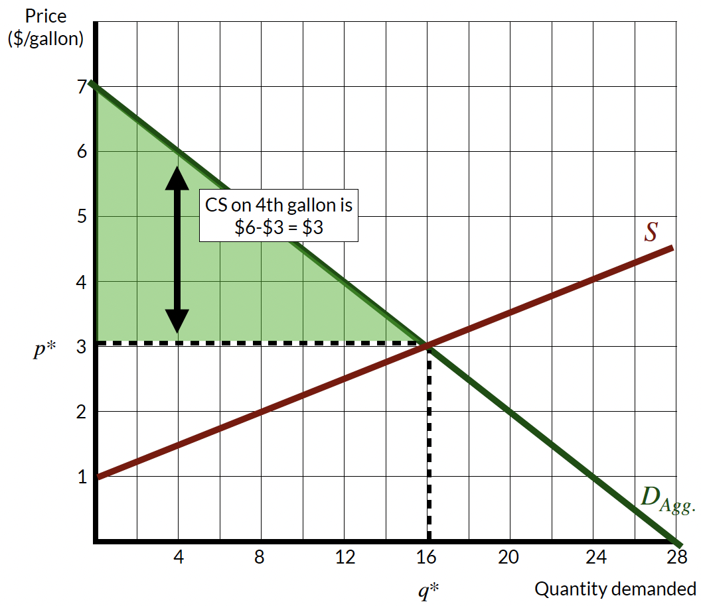
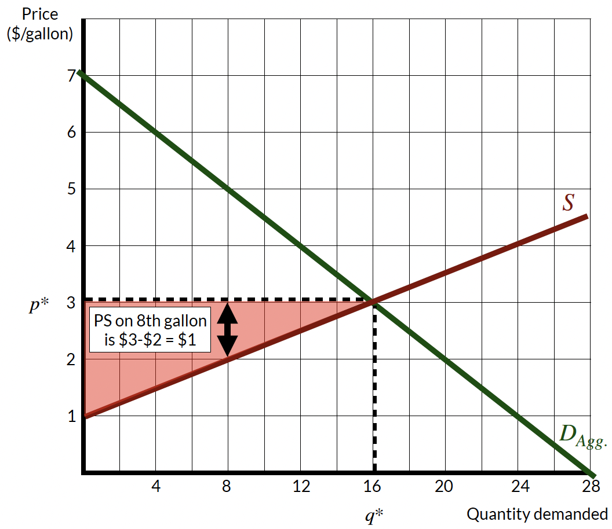
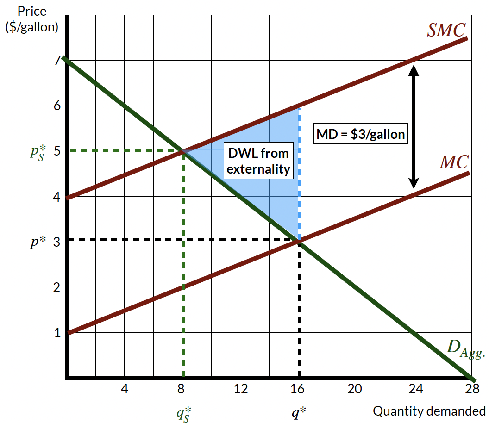
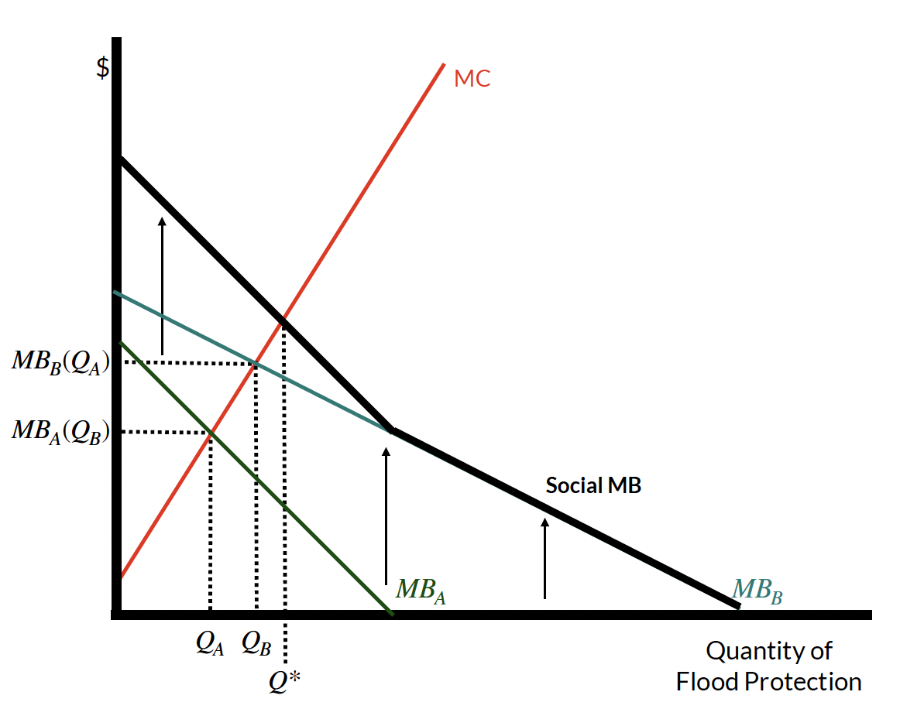

1.3 – why is climate change an economic problem?
markets and climate change
Climate change is a massive unpriced externality.
When we fail to account for the social costs of our production and consumption decisions, we tend to overproduce and overconsume.
Markets are useful tools because they efficiently allocate scarce resources. What does this mean? Well, markets maximize net surplus by balancing the benefits we get from consumption with the costs of producing the goods and services we consume.
To understand this, consider the total benefits of GHG emissions abatement (i.e., the benefits we get from reducing GHG emissions) and the total costs of GHG emissions abatement.
Reducing emissions by a little is relatively inexpensive (or may even have negative costs). For example, switching from incandescent lightbulbs to LED lightbulbs can save money and reduce GHGs emissions. As we reduce the cheapest GHG emissions first, we will then have to tackle more expensive emissions reductions elsewhere. Switching from coal to natural gas might reduce emissions relatively cheaply for electricity production. But, switching from natural gas to renewables is more expensive. And, switching from renewables to nuclear power is even more expensive. This means that the total costs of emissions abatement increases the more emissions we abate. As a result, the total abatement cost curve is increasing at an increasing rate (i.e., it is convex).

On the other hand, reducing emissions by a little bit can generate substantial benefits. The first few billion tons of emissions abated per year might reduce the risk of a catastrophic climate event (e.g., keeping global surface temperatures below, say, 3 degrees). But, as we reduce emissions further, the benefits of additional abatement become smaller (e.g., moving from 2 degrees of warming to 1.5 degrees warming still generates benefits, but fewer than moving from 3.5 to 3 degrees of warming). This means that the total benefits of emissions abatement are increasing at a decreasing rate (i.e., they are concave).
The shape of the total benefits curve tells us something about the marginal benefits and marginal costs of emissions abatement because they simply reflect the slope of the total benefit and total cost curves.
Marginal benefits (or demand for emissions abatement) are decreasing in the amount of emissions abated. Demand curves slope downward.
Marginal costs (or supply of emissions abatement) are increasing in the amount of emissions abated. Supply curves slope upward. See Figure 2 for an example of a marginal abatement cost curve.

Markets maximize net benefits because they balance the inherent tradeoff between the benefits of emissions abatement and the costs of doing so. Functionally, net benefits are maximized when the marginal benefits equal marginal costs (i.e., when the demand curve intersects the supply curve), which reflects the we want to find the point of emissions abatement that maximizes the vertical distance between the total cost and total benefit curves.
Markets are good at allocating resources when a few conditions are met:
- The market is competitive (i.e., buyers and sellers take prices as given)
- Firms and consumers both have perfect information about product quality
- The market is complete (i.e., all relevant costs and benefits are borne by participants in the market).
For our purposes, the last condition is the most important. When markets are incomplete, they fail to account for all relevant costs and benefits. In the case of climate change, the costs of GHG emissions are generally not reflected in the prices we pay for goods and services. As a result, we overproduce and overconsume goods and services that generate GHG emissions.
micro review
Before we dive deeper into the economics of climate change, it will be useful to review some basic microeconomic concepts that will help understand how we model some of the problems from climate change with tools of supply and demand.
individual and market (or aggregate) demand
Individual demand curves reflect how much of a good—say, gasoline—that individual consumers are willing buy at any given price. Individual demand curves are plotted with quantity on the horizontal axis and price on thevertical axis. The slope of the demand curve reflects the marginal benefit of consuming an additional unit of the good. Demand curves slope downards because as the price of a good falls, consumers are willing to buy more of it. But, the demand curve also tells us how much people value additional consumption of the good. As quantity consumed rises, the marginal benefit of consuming an additional unit of the good falls. We call this diminishing marginal benefits.
The market or aggregate demand curve reflects the sum of all individual demand curves. Importantly, with private goods, we sum individual demand curves horizontally to get the market demand curve. Adding “horizontally” means that we add up all quantities demanded at each price level. In Table 1, we see that the market demand for gasoline is the sum of the individual demand curves for Person A, Person B, and Person C for any given price level.
| Price | Person A | Person B | Person C | Market |
|---|---|---|---|---|
| $1 | 5 | 12 | 7 | 24 |
| $2 | 4 | 10 | 6 | 20 |
| $3 | 3 | 8 | 5 | 16 |
| $4 | 2 | 6 | 4 | 12 |
| $5 | 1 | 4 | 3 | 8 |
| $6 | 0 | 2 | 2 | 4 |
| $7 | 0 | 0 | 1 | 1 |
We can also represent the market demand curve graphically. In Figure 3, we see that the market demand curve is the sum of the individual demand curves for Person A, Person B, and Person C. This is just the same information as in Table 1, but represented graphically.

Building on this logic, we can go a step further and demonstrate these demand curves algebraically as well. We can define individual demand curves as follows:
- \(MB_A(q) : p = 6 − q\)
- \(MB_B(q) : p = 7 − 0.5q\)
- \(MB_C(q) : p = 8 − q\)
where \(p\) is the price per gallon of gasoline and \(q\) is the quantity of gasoline consumed.
To find the market or aggregate demand curve, we want to add the demand curves together, which we can represent as: \(Q_{agg} = q_A + q_B + q_C\). This is just the sum of the individual demand curves. To do this, we first solve each individual demand curve for \(q\):
- \(q_A = 6 − p\)
- \(q_B = (7 − p)/0.5\)
- \(q_C = 8 − p\)
This implies that \(Q = (6 − p) + (7 − p)/0.5 + (8 − p)\), which simplifies to \(Q = 28 − 4p\). Now, we can find the market demand curve by solving for \(p\), which gives us \(p = 7 − Q/4\). This is the market demand curve for gasoline that is represent in Figure 3.1
Individual and market supply curves work the same way, but they reflect the costs of producing goods and services. Supply curves will be upward sloping because as the price of a good rises, firms are willing to produce more of it. But, the supply curve also tells us how much it costs firms to produce additional units of the good. As quantity produced rises, the marginal cost of producing an additional unit of the good rises. We call this phenomenon diminishing marginal returns.
economic surplus
Above, we discussed how markets maximize net benefits by balancing the benefits of emissions abatement with the costs of doing so. This is a reflection of the concept of economic surplus. Economic surplus is the sum of consumer surplus and producer surplus for any given quantity consumed and produced in a market.
Demand curves reflect the consumer’s willingness to pay for a good at any quantity. Consumer surplus is the difference between what consumers are willing to pay for a good and what they actually pay, which is represented by the area between the demand curve and the price level. In Figure 4 (a), the vertical distance between the demand curve and the price level at \(P\) reflects the consumer surplus for that quantity level. For example, consumer surplus on the 4th gallon of gasoline is $6 - $3 = $3. If we calculate this vertical distance for every level of quantity, we get the aggregate measure of consumer surplus, which is the entire shaded between the demand curve and the price level up to the equilbrum quantity. We can easily calculate this area as the area of a triangle: \(CS = 0.5 \times (7-3) \times 16 = \$32\).


Producer surplus follows a similar description, although since supply curves represent marginal costs of producing a good, the producer surplus reflects the difference between what the seller receives for producing any quantity of goods less the costs of producing it. In Figure 4 (b), the vertical distance between the price level and the supply curve reflects the producer surplus for that quantity level. For example, producer surplus on the 8th gallon of gasoline is $3 - $2 = $1. If we calculate this vertical distance for every level of quantity, we get the aggregate measure of producer surplus, which is the entire shaded between the supply curve and the price level up to the equilibrium quantity. We can easily calculate this area as the area of a triangle: \(PS = 0.5 \times (3-1) \times 16 = \$16\).
These concepts are helpful because consumers and producers are going to make decisions in their best interest that maximize their own economic surplus. Faced with any price, consumers will continue to purchase goods and services until the marginal benefit of consuming an additional unit of the good equals the price of the good. In other words, the consumer surplus of the last unit consumed will be zero. If consumers were to consume more, the price they would pay would be more than the benefit they would receive from consuming the good. Similarly, producers will continue to produce goods and services until the marginal cost of producing an additional unit of the good equals the price of the good. In other words, the producer surplus of the last unit produced will be zero. If producers were to produce more, the price they would receive would be less than the cost of producing the good.
This behavior means that consumers will keep consuming until \(MB = p\) and producers will keep producing until \(MC = p\). Because consumers and producers face the same price, we end up at the equilibrium quantity where \(MB = MC\). So, everyone acting in their own self-interest leads to an efficient allocation of resources. This discussion captures the essence of markets.
externalities
An externality results when the actions of one individual (or firm) have a direct, unintentional, and uncompensated effect on the well-being of other individuals or the profits of other firms. (Importantly, price changes are not externalities because the consequences of a price change are already accounted for within the market.)
Externalities can be positive or negative. In the case of GHG emissions, the externality is negative because the costs of emissions are not reflected in the prices we pay for goods and services. This augments our standard demand model when were thinking about, say, the market for gasoline consumption. Gasoline is a good motivating example because it creates several salient externalities: GHG emissions, local air pollution from tailpipe emissions, traffic congestion, and accident externalities. Incidentally, recent research suggests that the social cost of gasoline consumption is just under $4 per gallon Linn et al. (2023).

Consider Figure 5, the private equilibrium level is \(q^\star\) and \(p^*\) where the supply (or private marginal cost) curve and the demand (or private marginal benefit) curve intersect. But, we know gasoline consumption generates externalities. The social marginal cost (SMC) curve reflects the total costs to society that are associated with gasoline consumption (inclusive of GHG emissions). Those externalities are represented by the vertical difference between the private marginal cost curve and the social marginal cost curve, which is called the marginal external damages (MD) of gasoline consumption. In the figure, \(MD=\$3\) implies that there are $3 of external costs generated for every gallon of gasoline consumed.
Operating at the privately optimal point of consumption results in deadweight loss to society, which reflects the social welfare loss of failure to incorporate external costs into the price of gasoline. Deadweight loss is the welfare loss borne by people outside of the market.
If we were to incorporate the social cost of gasoline consumption into the price of gasoline, the supply curve would shift up by the amount of the marginal external damages. This would result in a new equilibrium level of consumption, \(q_S^\star\), at the socially optimal price, \(p_S^\star\). At this point, consumers would have to pay more (in this case, 5 dollars per gallon), which would reduce the quantity of gasoline consumed.
Figure 5 is one of the most important figures in environmental economics because it demonstrates that society will consume and produce too much of goods that generate negative externalities, which is often the case that we care about when economic activity generates environmental harm. Later on, we will consider different policy instruments that attempt to achieve the socially optimal quantity through the use of taxes, subsidies, regulations, or designing markets that internalize the external costs of economic activity.
public goods
One primary reason that markets fail to account for the social costs of GHG emissions is that GHG mitigation is a public good. If the US were to abate GHG emissions, the benefits would be shared by everyone in the world. But, the costs of abatement would be borne by US citizens. As a result, the US has an incentive to free ride on the efforts of other countries to reduce emissions.
Public goods are characterized by two key features:
- Non-rivalry: One person’s consumption of the good does not reduce the amount available for others to consume.
- Non-excludability: Others cannot be excluded from consuming the good.
Examples of pure public goods include clean air, national defense, Wikipedia, and so forth.
Private goods are rivalrous and excludable. I can exclude you from consuming my private goods (e.g., the peanut butter and jelly sandwich I eat for lunch on most days). And, if I eat my sandwich, there is nothing left for you to eat.
Two other classes of goods are relevant for our purposes:
Common pool resources: Common pool resources are rivalrous but non-excludable. For example, fish in the ocean are rivalrous because if I catch a fish, you cannot catch it. But, the ocean is non-excludable because it is impossible to prevent people from fishing in the ocean.
Club goods: Club goods are non-rivalrous but excludable. For example, a private park is non-rivalrous because if I am in the park, you can also be in the park. But, the park is excludable because I can prevent you from entering the park.
When modeling equilibrium supply of public goods, we need to account for the nonrival nature of public goods. In Figure 6, there are two marginal benefit curves for different people that reflect how much they value flood protection. Imagine these two individuals live in a coastal community and face different risks of sea-level rise because of the elevation of their property, the value of their home, and so forth. The figure represents their willingness-to-pay for a seawall that provides reduced risk of flooding during hurricanes. Because both people can simultaneously enjoy the seawall, we need to add up their marginal benefits curves vertically to understand the aggregate benefits that each quantity of trips provides.2 This vertical summation results in the social marginal benefit curve.

The supply curve reflects the marginal cost of that the community bears in providing the public good (e.g., building materials, labor, and maintenance costs). Imagine that both person A and B are the people who actually have to build the wall. Person A is only willing-to-pay up to \(MB_A\) to build the wall, resulting in the height \(Q_A\) of the seawall, while person B is willing-to-pay up to \(MB_B\), resulting in \(Q_B\). Person A might recognize that Person B has a higher valuation of the seawall and, if Person B provides \(Q_B\) feet of the seawall, then Person A’s home is protected. This provides Person A with the incentive to free ride on the contribution of Person B.
But, this free-riding behavior will result in underprovision of the seawall. In order to determine the socially optimal level of provision, we need to add up vertically both people’s willingness-to-pay for the seawall and find where the resulting social marginal benefit curve intersects with the marginal cost curve. This intersection point is the socially optimal level of provision, represented by \(Q^\star\) in Figure 6. The socially optimal level of provision maximizes the net benefits of the seawall to society by incorporating the value that both individuals place on the seawall.
the coase theorem
The Coase Theorem states that if property rights are well-defined, transaction costs are low, and there aren’t too many parties involved, then private parties can bargain to reach an efficient outcome, regardless of the initial allocation of property rights (Coase 2013). This suggests that parties acting in their own self-interest will bargain to achieve the socially optimal solution
The Coase Theorem, while potentially powerful in some settings, is unlikely to be useful for addressing climate change. Why? Because the Coase Theorem requires well-defined property rights (who owns the right to emit GHGs into the atmosphere?) and low transaction costs (if, say, a company wanted to emit GHGs as a result of their operations, they would have to compensate all parties affected by their solution).
references
Footnotes
You might realize that the figure and the algebraic solution are not exactly the same. This occurs because the aggregate demand curve will actually be “kinked” because of the different intercepts of the individual demand curves (e.g., above a price of $6, there are only two demand curves to add together; above a price of $7, there is only one demand curve to consider). This means that the slope of the curve will change above these prices although I’ve avoided this discussion for clarity.↩︎
Recall that when we are dealing with private goods, we add up demand curves horizontally to determine the aggregate demand curve. We do this because of the rivalrous nature of private goods. Only one person can receive the benefits of consuming a single apple. With public goods, this calculus changes because multiple people can enjoy the same quantity of, say, GHG mitigation.↩︎